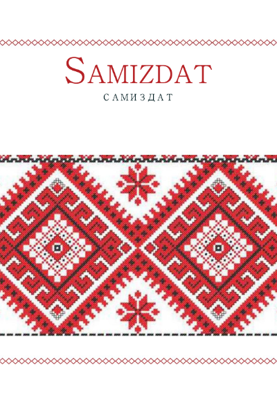
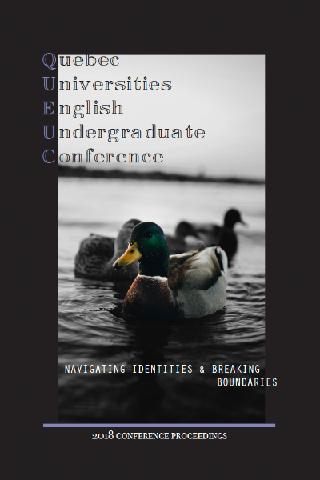
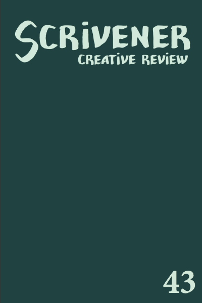
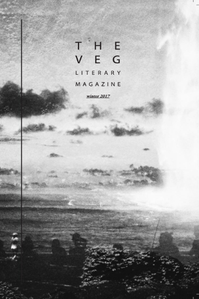
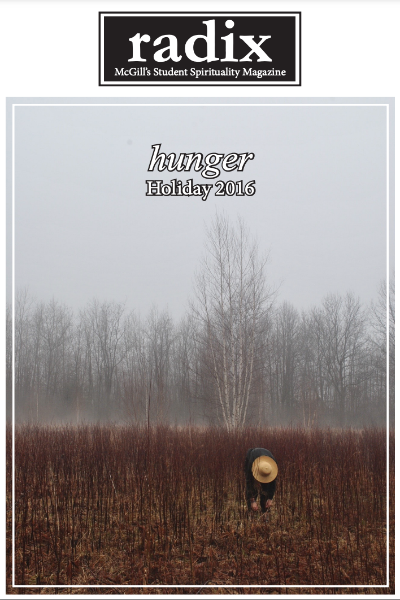
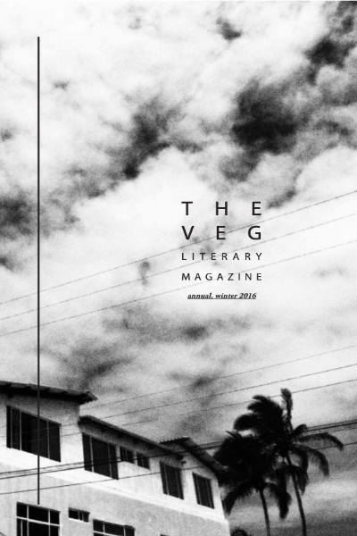

Ecological Interventions: The
Künstlerroman
in H.D.'s
Madrigal Cycle

"Tragedies of Mistiming": Generic Subversion and the Need for Change in Eugene Onegin and The Stone Guest

Unweaving the Rainbow: Fatal Rationality in "Lamia" and "The Fairy of the Fountains"

Pygmalia

Stranding

Hungry Like the Wolf

Two Wise Men